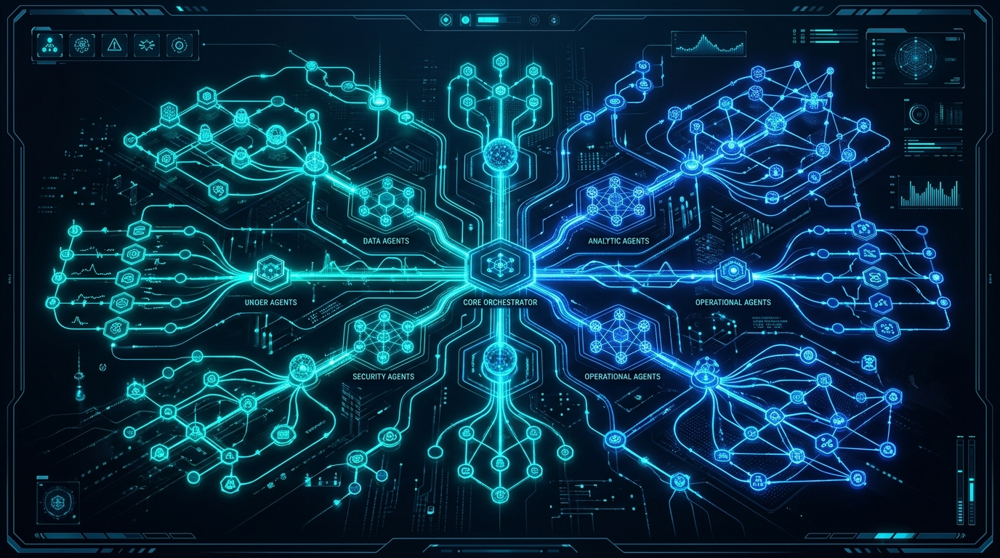

소프트웨어 제품 라인업
지식그래프 기반 Goobit AI Suite부터 국가 공인 저작권 소프트웨어 TBCMS, OPMS까지 공공과 기업의 핵심 비즈니스를 지원하는 플래그십 솔루션입니다.
Goobit AI Suite: 지식그래프 기반 하이브리드 RAG 플랫폼
조직 내 축적된 수십만 건의 비정형 행정 문서, 규정집, 매뉴얼을 지식그래프(Knowledge Graph)로 온톨로지화하고, 자체 온프레미스 sLLM과 연결하여 오차 없는 업무 지능을 구현합니다.
지식그래프 자동 생성 & 시각화
법령 조항, 업무 지침, 결재 문서 간의 상호 참조 관계를 그래프 노드와 엣지로 자동 변환하여 인과관계 기반 정밀 추론을 가능하게 합니다.
하이브리드 RAG (Vector + Graph)
단순 텍스트 임베딩 벡터 검색의 한계를 넘어 지식그래프 탐색을 동시 수행함으로써 맥락을 놓치지 않는 99.8% 정확도의 답변을 생성합니다.
완전한 폐쇄망 온프레미스 배포
인터넷 연결이 차단된 사내 서버 환경에 구축되어 고객사의 기밀 자산 유출을 원천 방지하며, 부서별 열람 권한 필터링(RBAC)을 보장합니다.
Goobit AI Suite 엔터프라이즈 통합 관제 콘솔 화면
비정형 문서 간 의미적 연결망을 3차원 클러스터로 실시간 시각화 및 탐색
사내 GPU 클러스터 부하 및 토큰 생성 속도(평균 12ms) 실시간 텔레메트리
인터넷 폐쇄망 환경에서 100% 무결점 동작하며 국정원 보안성 검토 기준 충족
Goobit AI Suite 엔터프라이즈 아키텍처
데이터 인제스천부터 지식그래프 모델링, 다중 에이전트 협업, 보안 거버넌스에 이르는 전주기 엔터프라이즈 파이프라인입니다.

질의 분석부터 지식그래프 탐색, 벡터 Re-ranking, 국정원 보안성 필터링 및 최종 HWP 보고서 조판까지 자율 완수합니다.
기술 솔루션 비교 분석
일반 상용 LLM 래퍼 서비스 및 기존 검색 엔진과 비교할 때 Goobit AI Suite가 제공하는 압도적 차별성입니다.
| 비교 평가 항목 | Goobit AI Suite | 일반 LLM 래퍼 솔루션 | 레거시 검색 엔진 |
|---|---|---|---|
| 지식그래프(Knowledge Graph) 인과 추론 |
기본 내장 (개체 간 관계 그래프 자동 생성)
|
미지원 (단순 텍스트 매칭)
|
미지원 (키워드 검색 한계) |
| 환각(Hallucination) 억제율 |
99.8% (Ground Truth 원문 인용 검증)
|
낮음 (빈번한 그럴듯한 거짓 답변)
|
해당 없음 (검색 결과 링크만 제공) |
| 사내 폐쇄망 온프레미스 배포 |
100% 지원 (망분리 국정원 보안 규격 충족)
|
제한적 (외부 클라우드 API 필수 의존)
|
지원 가능 |
| 전자정부 표준프레임워크 4.x 연동 |
자체 커넥터 기본 탑재 및 100% 호환
|
별도 커스텀 엔지니어링 필요
|
부분 지원 |
| 부서/직급별 세분화 권한 제어 (RBAC) |
문서/청크 단위 세밀한 ACL 필터링
|
미지원 (프롬프트 레벨 보안 취약)
|
기본 DB 권한 제어 |
TBCMS (Total Board & Content Management System)
TBCMS는 농림축산식품부, KOTRA, 서울디지털재단 등 국가 공공기관 포털에서 지난 10년간 검증된 최적의 콘텐츠 관리 플랫폼입니다. 개발 지식이 없는 현업 실무자도 직관적인 블록 에디터를 통해 대국민 공지사항, 웹진, 미디어 자료를 웹 표준에 맞게 배포할 수 있습니다.
수십 개 산하기관 웹사이트 단일 어드민 통제
명도 대비, 대체 텍스트 누락 실시간 알림
Spring Boot 3 기반 고성능/보안 규격 충족
OPMS (Orchestra & Performance Management System)
OPMS는 국내 유일의 문화예술 단체 전용 스마트 운영 ERP 솔루션입니다. 복잡한 단원/객원 아티스트 스케줄링부터 수만 권에 달하는 악보 라이브러리 추적, 고가 악기 자산 관리, 표준 전자계약 체결까지 원스톱으로 처리하여 예술 행정의 디지털 혁신을 주도합니다.
파트별 편성표 자동화 및 모바일 PUSH 실시간 전송
총보/파트보 대여 이력 및 저작권 사용료 추적
전자 서명 및 표준 출연 계약서 행정 공수 80% 절감
귀사의 데이터 환경에 최적화된 AI 솔루션을 상담하세요
폐쇄망 온프레미스 지식그래프 구축부터 기존 사내 레거시 연계까지, 구비트 AI 전문 엔지니어가 1:1 맞춤 기술 로드맵을 제안해 드립니다.